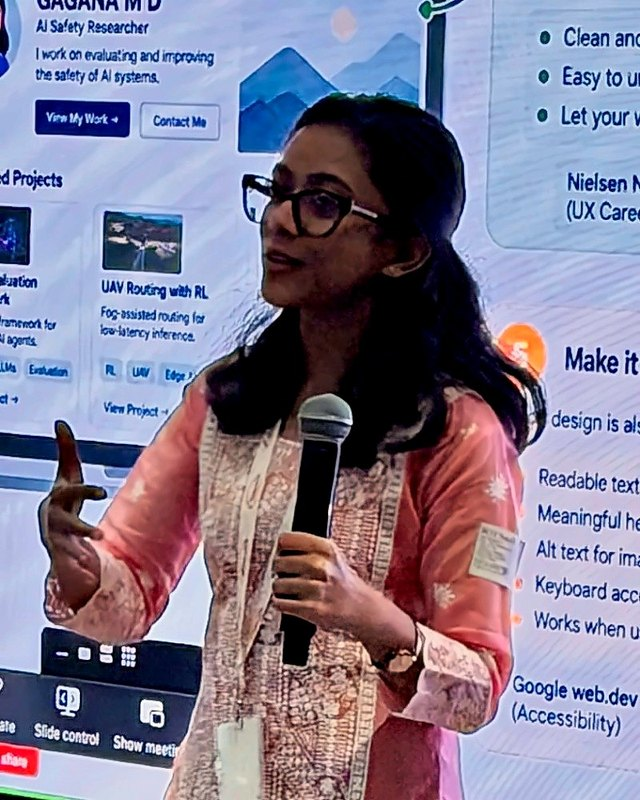

Empirical AI safety · Agent monitoring and evaluations
I study how to monitor AI agents when we can't see everything they do.
I'm Gagana M D, an early-career AI safety researcher. I run small, controlled experiments on whether we can catch and stop AI agents in time, and I do most of that work in teams. This page is a short overview; each item links to the detail.
Looking for a funded research fellowship or research engineering role in empirical AI safety.

Overview
What I've done so far.
For mentors and supervisors: the short version. Each line links to the full write-up, my part and the limits.
Research
- Detection Is Not Containment · first authorA monitor caught a harmful agent action one step before the last point where it could still be stopped, and meaning-preserving renames broke 4 of 12 decisions. Preregistered, with public code. Case study · Code
- Collusion among LLM agents · two team reportsLed a covert monitor-swap study (colluding agents never noticed the swap), and ran probing and steering on a pricing LLM that showed no punishment of undercutting.
- LLM-generated world models · PRISM fellowshipMain code contributor. 134 of 135 generated games ran, but most didn't encode the intended structure. Accepted at the NeurIPS 2026 NEmo workshop.
- Hyperspectral BiorNet · first authorA wavelet framework for hyperspectral unmixing, from before I moved into AI safety. Peer-reviewed, IEEE InGARSS 2025.
Field building and speaking
- Roundtable: What makes cooperation without control work?Designed and hosted for the Post-Control Initiative (post-AGI governance) at Sentient Futures, with about ten participants from AI governance, technical safety and foresight.
- Workshops and mentoringWorkshop facilitator for Women in Big Data India's Shakti Mentorship Program; helped run 11+ Women Who Code workshops reaching 350+ people.
Working with others
- Most of my research is team researchI co-led a three-person sprint team, led one experiment inside a larger project, supported two other fellowship teams, and wrote a response to the three public reviews of my sprint report. See the reviews
Experience
- Sentient FuturesResearch Fellow: post-AGI governance (Post-Control Initiative) and behavioural evaluation
- PRISM AI Safety Research FellowshipResearch Fellow, completed
- BaseThesis Labs, BengaluruAI Safety Researcher: agent evaluation and benchmarking
- Indian Institute of Science, DREAM LabResearch Intern: drone and edge–fog co-scheduling
All papers and reports · Full experience · Evaluation reviews
Contact
Get in touch
I'm looking for a funded research fellowship or research engineering role in empirical AI safety. If you work on agent monitoring, control evaluations or multi-agent safety, I'd like to hear what you're testing. A short note on the problem and where it's stuck is the best first email.